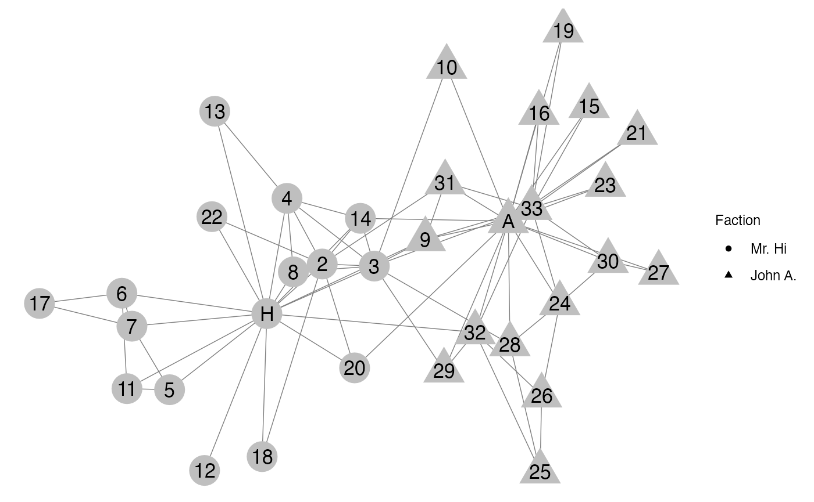
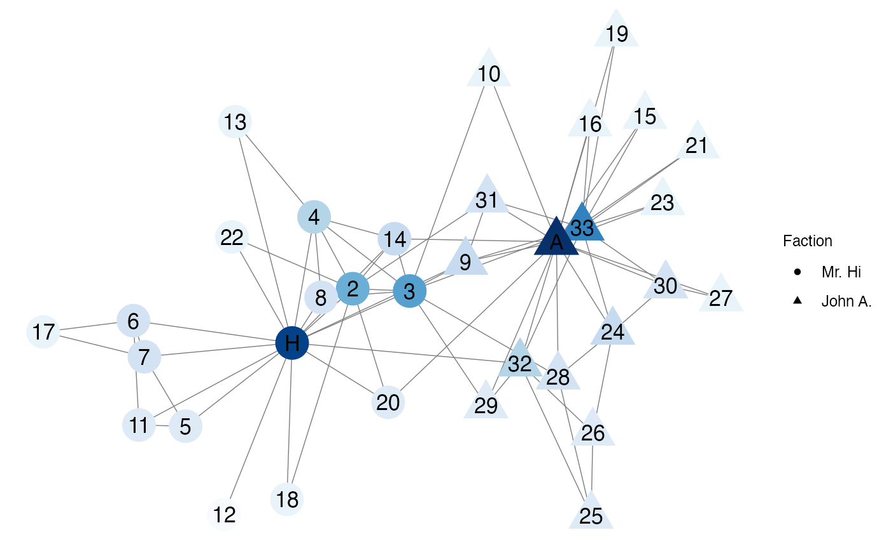
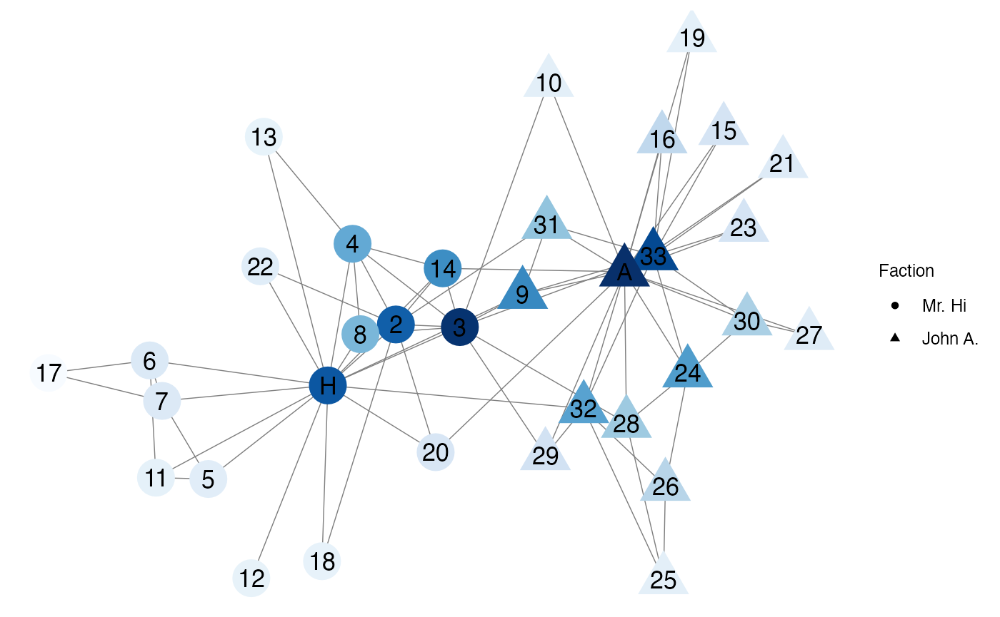
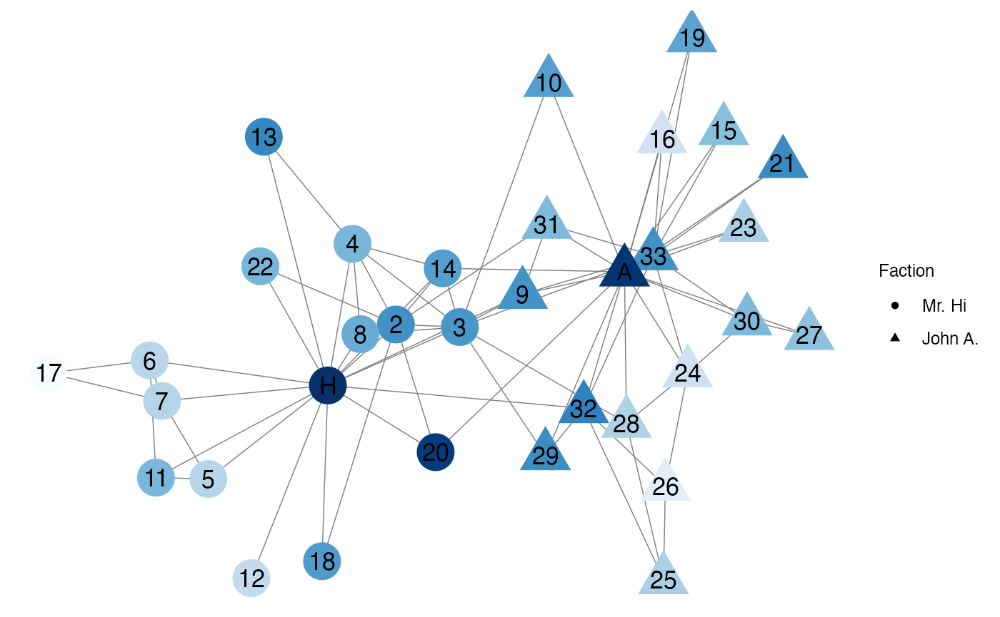

set.seed(924)
#For Functionality
library(JaB)
library(igraph)
## For Plotting
library(ggplot2)
library(GGally)
library(network)
library(sna)
library(colourvalues)
library(kableExtra)In this vignette, we discuss the Jackknife-after-Bootstrap (JaB) algorithm for influential nodes in networks. The JaB algorithm for regression data was proposed by Martin and Roberts (2010) and further studied in Beyaztas and Alin (2013). Here we expand this methodology to network data.
JaB for regression uses outlier, leverage, and influence statistics
to quantify influence (see vignette("jab-regression")). In
network data, centrality statistics are used to quantify influence. Each
centrality statistic measures influence as control over information
moving throughout the network.
Generally, larger networks have more complex data structures which are notoriously difficult to exactly quantify. One approach is to identify central nodes whose positions data allow them to influence the movement of objects or information throughout the network. But what does it mean for a node to be central or influential? There is no clear consensus on these definitions and thus dozens of centrality statistics have been proposed to quantify influence Rodrigues (2019).
Nodes with large centrality statistics are influential because of their critical position in the network (Valente et al. 2008). But how large does a centrality statistic need to be in order for the node to be considered influential? While these statistics are very helpful in quantifying each node’s influence, they do not provide a clear answer to this question. It is also not clear if the definition of “large enough to be influential” is the same across all measures of centrality. In this vignette we introduce the Jackknife-after-Bootstrap algorithm for network data that utilizes centrality statistics to answer the question “Which nodes in the network are influential?” It is important to bear in mind that the answer to this question cannot be divorced from the definition of influential. And since there are many proposed definitions, our algorithm is designed to adapt to any centrality statistic.
Centrality Statistics
We begin by introducing a few centrality statistics and defining the types of influence they measure. The igraph package has many useful functions. A network \(G = (V, E)\) consists of two sets, the set of nodes (also called vertices), \(V\), and the set of edges, \(E\). The node set, \(V = \{v_i: i = 1, ..., n\}\), consists of all \(n\) nodes in the network which, without loss of generality, are labeled 1, 2, …, \(n\). The edge set \(E = \{(i,j) : e_{i,j} = 1, i,j = 1,...,n\}\) consists of all edges where \(e_{i,j}=1\) if there exists a connection between nodes \(v_i\) and \(v_j\), and is 0 otherwise. It is often mathematically convenient to arrange the edges in a matrix. Let \(\boldsymbol{A}\) be the of graph \(G\), where \(A_{i,j} = e_{i,j}\) is the \((i,j)^{\text{th}}\) entry of \(\boldsymbol{A}\).
Throughout this section, we will use the karate network
as an example. This network represents the members of a university
karate club that broke into two factors, one led by John A (circles),
and the other by Mr. Hi (squares). The nodes are members of the karate
club and and edge is present between two nodes if the two respective
actors participated in common activities together.
data("karate")
l <- layout_nicely(karate)
V(karate)$x <- l[,1]
V(karate)$y <- l[,2]
net <- intergraph::asNetwork(karate)
net %v% "shape" <- ifelse(V(karate)$Faction == 1, "circle", "triangle")
delete.vertex.attribute(net, "color")
ggnet2(net,
label = TRUE,
node.shape = "shape",
mode = c("x", "y"),
node.label = "label") +
scale_shape(name = "Faction", labels = c("Mr. Hi", "John A."))
Degree Centrality
One way to measure influence is the number of connections an actor
has. If an actor has many connections we consider them influential due
to their “popularity” among the other actors, whereas if an actor as
relatively few connections we consider them “unpopular”. Degree
centrality measures this type of influence. The , \(d_i\), of a node is the number of edges
connected to it and is defined through multiple statistics,
\[\begin{equation}
\gamma_i^{\text{deg}} = \sum_{j} e_{i,j} = \sum_{j} A_{i,j} =
\sum_{i} A_{i,j}.
\end{equation}\]
Popular actors will have a large degree as they are connected to many other actors, and unpopular actors will have a small degree as they are connected to only a few actors.
The maximum degree is \(n-1\) and occurs when a node is connected to all other nodes. The minimum degree is \(0\) and occurs when a node is not connected to any other node (i.e. it is isolated). For this reason, degree is often normalized by the constant \(n-1\). \[\begin{equation} \gamma_i^{\text{deg}} = \frac{1}{n-1}\sum_{j} e_{i,j} = \frac{1}{n-1}\sum_{j} A_{i,j} = \frac{1}{n-1}\sum_{i} A_{i,j}. \end{equation}\]
Let’s look at the degree of the karate network. In the plot below light blue nodes have a low degree and dark blue nodes have a high degree. Mr. Hi, John A., and Node 33 have the highest degree values and thus are the most “popular”.
deg <- igraph::degree(karate)
net %v% "deg.cols" <- colour_values(deg, palette = "blues")
ggnet2(net,
label = TRUE,
node.shape = "shape",
mode = c("x", "y"),
node.label = "label",
node.color = "deg.cols") +
scale_shape(name = "Faction", labels = c("Mr. Hi", "John A.")) 
Eigenvector centrality
Degree centrality measures influence as the number of connections a node has. However, it may be the case that not all nodes are equally as important to be connected to. For example, when measuring a node’s popularity, in addition to the number of connections a node has, we may also want to consider how popular those nodes are (Lü et al. 2016). This relational structure is captured by eigenvector centrality (Bonacich 1972). Nodes with high eigenvector centrality are influential because they are closely connected to other nodes that are also influential. Eigenvector centrality is calculated as \[\begin{equation}\label{eqn:eigen} \gamma_i^{\text{ev}} = \frac{1}{\lambda} \sum_{j=1}^n A_{i,j}\gamma_j^{\text{ev}}. \end{equation}\]
In the karate network, Node 3 has a large eigenvector centrality because it is connected to Mr. Hi and Actor 33, both of which also have large eigenvector centralities.
ev <- igraph::eigen_centrality(karate)$vector
net %v% "ev.cols" <- colour_values(ev, palette = "blues")
ggnet2(net,
label = TRUE,
node.shape = "shape",
mode = c("x", "y"),
node.label = "label",
node.color = "ev.cols") +
scale_shape(name = "Faction", labels = c("Mr. Hi", "John A.")) 
# Connections of Node 3
igraph::neighborhood(karate, order = 1, nodes = 3)
#> [[1]]
#> + 11/34 vertices, named, from 4b458a1:
#> [1] Actor 3 Mr Hi Actor 2 Actor 4 Actor 8 Actor 9 Actor 10 Actor 14
#> [9] Actor 28 Actor 29 Actor 33Closeness Centrality
Closeness centrality is a distance-based metric that captures how
central a node is to the network (bavelas-1950?). The closeness
of node \(i\) is the reciprocal of the
average distance along the shortest paths from node \(i\) to the other \(n-1\) nodes in the network.
Close'' nodes are those with large closeness values as they have short average distance to all other nodes in the network and are influential due to their ability to receive and disseminate information quickly and directly to every other node in the network.Far’’
nodes are those with small closeness values because they have a long
average distance to all other nodes.
Mr. Hi, John A., and Node 33 have large closeness centralities because they have large degree values. Nodes with large degree values tend to have large closeness centralities due to their highly connected positions in the network. Additionally, Node 20 has a high closeness centrality because it is connected to two highly connected nodes (Mr. Hi and John A.).
close <- igraph::closeness(karate)
net %v% "close.cols" <- colour_values(close, palette = "blues")
ggnet2(net,
label = TRUE,
node.shape = "shape",
mode = c("x", "y"),
node.label = "label",
node.color = "close.cols") +
scale_shape(name = "Faction", labels = c("Mr. Hi", "John A.")) 
igraph::neighborhood(karate, order = 1, nodes = 20)
#> [[1]]
#> + 4/34 vertices, named, from 4b458a1:
#> [1] Actor 20 Mr Hi Actor 2 John AJackknife-after-Bootstrap
As described in vignette("jab-regression"), the JaB
algorithm in regression identifies influential points. This algorithm
has a direct analogy to network data. Using centrality statistics, we
can detect influential nodes in networks as follows:
For each node in the network \(G=(V,E)\), we test the hypotheses \(H_0\): node \(i\) is not influential to the network, versus \(H_1\): node \(i\) is influential to the network.
Specify a centrality statistic, \(\gamma\), that quantifies the type of influence we want to measure. Define \(q\in [0, 1]\) to be the upper quantile cut off value and \(B\) to be the number of bootstrap samples.
The JaB algorithm has three steps:
Step 1 (centrality step): For all \(v_i \in V\), calculate \(\gamma_i\).
Step 2 (bootstrapping step): Generate bootstrap samples \(G^{*b}=(V^{*b}, E^{*b})\) for \(b=1,...,B\). For each bootstrap sample, calculate \(\{\gamma_j^{*b} : j=1,...,n\}\).
Step 3 (jackknife-after step): For \(i=1,...,n\);
Calculate \(S_i^{*b} = \boldsymbol{1}(v_i \in V^{*b})\) for \(b=1,...,B\) and construct \(\mathcal{B}_{-i} = {G^{*b}: S_i^{*b} = 0)\) which is the set of all bootstrap sample networks that contain node \(i\).
Let \(\Gamma\_{-i} = \{\gamma_j^{*b} : G^{*b} \in \mathcal{B}_{-i}, j=1,...,n\}\) be the set of all centrality statistics calculated from all bootstrap sample networks that contain node \(i\).
Calculate the cutoff value, \(q_{-i}\), the \(q^{\text{th}}\) quantile of \(\Gamma_{-i}\).
If \(\gamma_i > q_{-i}\), reject Hypothesis the null hypothesis and conclude data node \(i\) is influential.
Additionally, we use the bootstrap samples generated in Step 2 of the JaB algorithm to construct bootstrap standard errors and confidence intervals. Let \(\mathcal{B}_i = \{G^{*b} : S_i^{*b} = 1\}\) be the set of all bootstrap networks that include \(v_i\) and \(\Gamma_i = \{\gamma_j : v_j^{*b} = v_i , v_j^{*b} \in V^{*b}\}\) be the set of centrality statistics corresponding to the nodes that are sampled to be \(v_i\). Then the bootstrap standard error of \(\gamma_i\) is \[\sigma_i^* = \sqrt{(|\Gamma_i |-1)^{-1} \sum_{\gamma_j \in \Gamma_i} (\gamma_j - \Bar{\gamma}_i)^2}\] where \(\Bar{\gamma}_i = |\Gamma_i|^{-1}\sum_{\gamma_j \in \Gamma_i} \gamma_j\). Using \(\sigma_i^{ *}\), bootstrap confidence intervals are constructed in the traditional way. For example, a 95% bootstrap confidence interval for \(\gamma_i\) is \((\gamma_i - 1.96\sigma_i^{ *} , \gamma_i + 1.96\sigma_i^{ *})\). For many centrality statistics \(\gamma_i\) must be a non-negative value. If it is the case that \(\gamma_i\) must be non-negative and \(\gamma_i - 1.96\sigma_i^{ *}<0\), we set the 95% bootstrap confidence interval to be \((0, \gamma_i + 1.96\sigma_i^{ *})\). By construction \(\mathcal{B}_i \cap \mathcal{B}_{-i} = \emptyset\). The bootstrap samples in \(\mathcal{B}_i\) are used for the bootstrap standard errors and the bootstrap samples in \(\mathcal{B}_{-i}\) are used for the hypothesis test of node \(v_i\)’s influence.
The choice of \(q\)
In JaB for network data, \(q\) is generally only an upper quantile cutoff (opposed to upper and lower as in the case of regression) because centrality statistics are generally only positive; nodes with large centrality statistics are influential and nodes with statistics close to zero are not influential. Thus when detecting influential nodes, we only need to consider the upper tail of the distribution
Examples
Karate Network
result <- karate.result <- jab_network(
network = karate,
central.func.name = "degree",
central.package.name = "igraph",
central.func.args = list(normalized = TRUE),
bootstrap.func.name = "bootstrap_snowboot" ,
bootstrap.package.name = "JaB" ,
bootstrap.func.args = list( num.seed = 1, num.wave = 2 ),
B = 1000,
quant = 0.90,
nodes = NULL,
return.boot.samples = FALSE)
kable(karate.result) %>%
kable_styling()| Node_Number | Node_Name | Orig_Stat | Boot_mean | Boot_sd | Boot_skew | Upper_Quantile | Influential | Rank | Can_Jackknife | Num_Boot_Samps |
|---|---|---|---|---|---|---|---|---|---|---|
| 1 | Mr Hi | 0.4848485 | 0.1391861 | 0.1733375 | 1480.7380 | 0.2631579 | TRUE | 1 | TRUE | 244 |
| 34 | John A | 0.5151515 | 0.1406782 | 0.1737237 | 1473.3565 | 0.3750000 | TRUE | 2 | TRUE | 275 |
| 33 | Actor 33 | 0.3636364 | 0.1410643 | 0.1739514 | 1514.4534 | 0.3750000 | FALSE | 3 | TRUE | 247 |
| 26 | Actor 26 | 0.0909091 | 0.1515643 | 0.1645773 | 535.6559 | 0.3333333 | FALSE | 4 | TRUE | 687 |
| 24 | Actor 24 | 0.1515152 | 0.1389793 | 0.1762904 | 1308.1310 | 0.4000000 | FALSE | 5 | TRUE | 368 |
| 6 | Actor 6 | 0.1212121 | 0.1347489 | 0.1768465 | 1097.7574 | 0.3750000 | FALSE | 6 | TRUE | 486 |
| 7 | Actor 7 | 0.1212121 | 0.1347489 | 0.1768465 | 1097.7574 | 0.3750000 | FALSE | 6 | TRUE | 486 |
| 28 | Actor 28 | 0.1212121 | 0.1410643 | 0.1739514 | 1514.4534 | 0.3750000 | FALSE | 6 | TRUE | 247 |
| 17 | Actor 17 | 0.0606061 | 0.1621258 | 0.2024164 | 279.4263 | 0.3333333 | FALSE | 9 | TRUE | 824 |
| 30 | Actor 30 | 0.1212121 | 0.1365459 | 0.1754419 | 1315.4058 | 0.4000000 | FALSE | 10 | TRUE | 395 |
| 31 | Actor 31 | 0.1212121 | 0.1375821 | 0.1746079 | 1628.9705 | 0.4000000 | FALSE | 10 | TRUE | 253 |
| 5 | Actor 5 | 0.0909091 | 0.1347489 | 0.1768465 | 1097.7574 | 0.3750000 | FALSE | 12 | TRUE | 486 |
| 11 | Actor 11 | 0.0909091 | 0.1347489 | 0.1768465 | 1097.7574 | 0.3750000 | FALSE | 12 | TRUE | 486 |
| 25 | Actor 25 | 0.0909091 | 0.1462448 | 0.1560607 | 538.8548 | 0.3750000 | FALSE | 12 | TRUE | 688 |
| 29 | Actor 29 | 0.0909091 | 0.1410643 | 0.1739514 | 1514.4534 | 0.3750000 | FALSE | 12 | TRUE | 247 |
| 2 | Actor 2 | 0.2727273 | 0.1310694 | 0.1668775 | 1538.3688 | 0.6000000 | FALSE | 16 | TRUE | 326 |
| 10 | Actor 10 | 0.0606061 | 0.1365664 | 0.1719945 | 1535.7280 | 0.4000000 | FALSE | 17 | TRUE | 302 |
| 15 | Actor 15 | 0.0606061 | 0.1334745 | 0.1739711 | 1331.7088 | 0.4000000 | FALSE | 17 | TRUE | 423 |
| 16 | Actor 16 | 0.0606061 | 0.1334745 | 0.1739711 | 1331.7088 | 0.4000000 | FALSE | 17 | TRUE | 423 |
| 19 | Actor 19 | 0.0606061 | 0.1334745 | 0.1739711 | 1331.7088 | 0.4000000 | FALSE | 17 | TRUE | 423 |
| 21 | Actor 21 | 0.0606061 | 0.1334745 | 0.1739711 | 1331.7088 | 0.4000000 | FALSE | 17 | TRUE | 423 |
| 23 | Actor 23 | 0.0606061 | 0.1334745 | 0.1739711 | 1331.7088 | 0.4000000 | FALSE | 17 | TRUE | 423 |
| 27 | Actor 27 | 0.0606061 | 0.1344875 | 0.1768988 | 1246.0929 | 0.4000000 | FALSE | 17 | TRUE | 451 |
| 13 | Actor 13 | 0.0606061 | 0.1300127 | 0.1709925 | 1135.8166 | 0.4166667 | FALSE | 24 | TRUE | 513 |
| 18 | Actor 18 | 0.0606061 | 0.1302440 | 0.1701291 | 1207.7662 | 0.4166667 | FALSE | 24 | TRUE | 479 |
| 22 | Actor 22 | 0.0606061 | 0.1302440 | 0.1701291 | 1207.7662 | 0.4166667 | FALSE | 24 | TRUE | 479 |
| 3 | Actor 3 | 0.3030303 | 0.1399091 | 0.1795191 | 1914.9343 | 0.6666667 | FALSE | 27 | TRUE | 88 |
| 12 | Actor 12 | 0.0303030 | 0.1300127 | 0.1709925 | 1135.8166 | 0.4166667 | FALSE | 28 | TRUE | 513 |
| 4 | Actor 4 | 0.1818182 | 0.1310694 | 0.1668775 | 1538.3688 | 0.6000000 | FALSE | 29 | TRUE | 326 |
| 8 | Actor 8 | 0.1212121 | 0.1286171 | 0.1672100 | 1488.9024 | 0.5555556 | FALSE | 30 | TRUE | 357 |
| 9 | Actor 9 | 0.1515152 | 0.1379871 | 0.1801376 | 2002.8578 | 0.6666667 | FALSE | 31 | TRUE | 82 |
| 14 | Actor 14 | 0.1515152 | 0.1379871 | 0.1801376 | 2002.8578 | 0.6666667 | FALSE | 31 | TRUE | 82 |
| 20 | Actor 20 | 0.0909091 | 0.1379871 | 0.1801376 | 2002.8578 | 0.6666667 | FALSE | 33 | TRUE | 82 |
| 32 | Actor 32 | 0.1818182 | 0.1416195 | 0.1814396 | 1982.8849 | 0.8000000 | FALSE | 34 | TRUE | 27 |